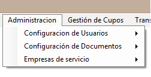

Administración

Módulo Administración.
En este módulo encontraremos tres submódulos, los cuales son:
? Configuración de Usuarios.
? Gestión de Documentos.
? Empresa de Servicio.
Estos submódulos son los encargados de gestionar los usuarios del software y sus
respectivos roles, también de administrar las plantillas que se generan en el sistema
como son las resoluciones, al igual que gestionar las empresas de servicio público.
Importante: Este módulo debería ser solo para el usuario ADMINISTRADOR del
software.